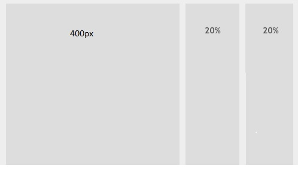

Układ
hybrydowy

Jest to połączenie normalnego układu z układem płynnym. Dzięki niemu może np tylko jeden blok zmieniać swoją szerokość. Stosujemy go używając w sąsiednich blokach(div + wartość float): width z wartością stałą: width:100px; oraz width z wartością procentową: width:90%;